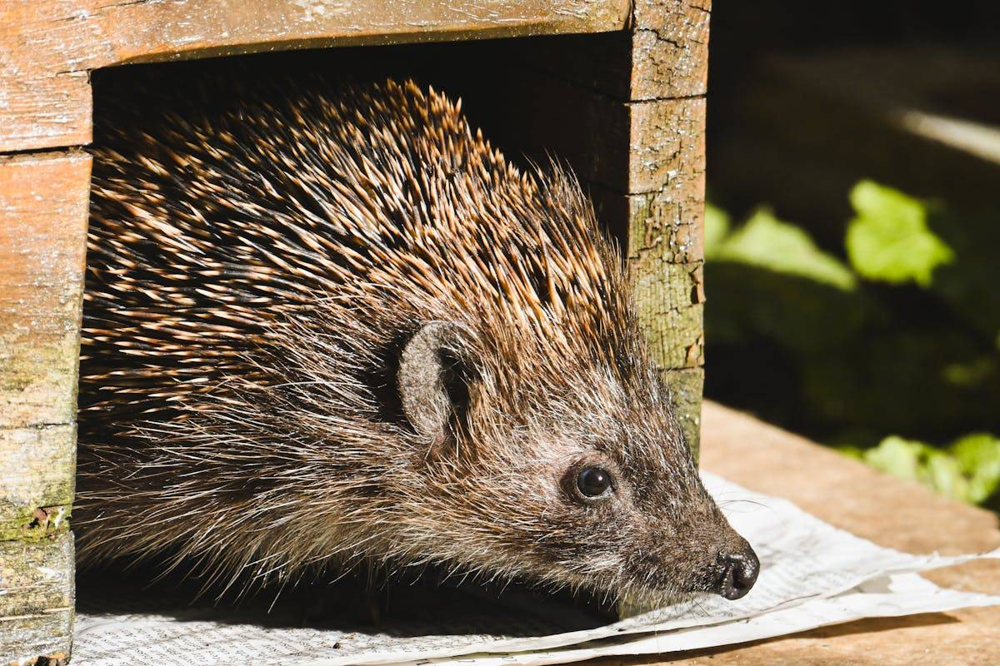
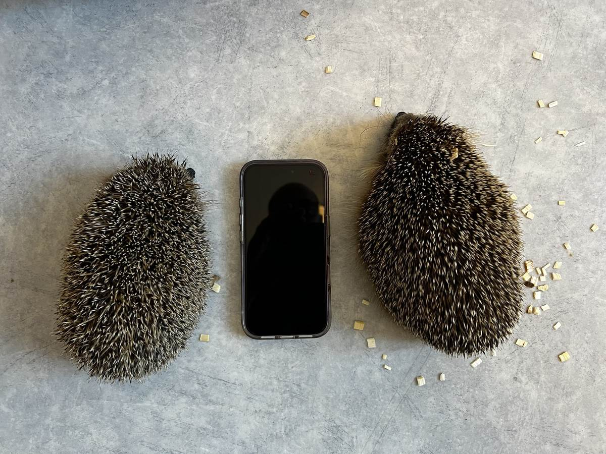

Euroopan siili (Erinaceus europaeus) on yksi rakastetuimmista villieläimistämme — ja yksi nopeimmin katoavista lajeista. Lokakuussa 2024 IUCN nosti siilin uhanalaisuusluokituksen luokasta "elinvoimainen" luokkaan "silmälläpidettävä", koska kannat ovat romahtaneet yli 30 % kymmenessä vuodessa monissa Euroopan maissa. Suomessa siili elää levinneisyytensä pohjoisrajalla, mikä tekee kannastamme erityisen haavoittuvan. Tässä artikkelissa käymme läpi siilin tilanteen, uhat ja sen, miten jokainen voi auttaa.
Kannan romahdus Euroopassa
Siilikanta on laskenut dramaattisesti kaikkialla Euroopassa. Iso-Britanniassa maaseudun siilikanta on pienentynyt 30–75 % vuodesta 2000 ja siili on luokiteltu vaarantuneeksi (Vulnerable). Saksassa kanta on puolittunut Baijerissa kymmenessä vuodessa. Alankomaissa siili on luokiteltu erittäin uhanalaiseksi (Endangered). Ruotsissa ja Norjassa kannan arvioidaan laskeneen yli 30 %. Vuonna 2025 julkaistu kattava tutkimus (Biological Conservation) vahvisti, että siilikanta on pienentynyt yli puolessa niistä Euroopan maista, joissa laji esiintyy. Euroopan parlamentissa on käynnistetty työ EU:n laajuisen siilien suojelustrategian luomiseksi.
Siili Suomessa
Suomessa siili elää levinneisyytensä pohjoisrajalla — yhtenäinen esiintymisalue ulottuu suunnilleen Tornio–Kuhmo-linjalle asti. Siili on rauhoitettu luonnonsuojelulain (9/2023) nojalla. Vuoden 2019 uhanalaisuusarvioinnissa siili luokiteltiin Suomessa elinvoimaiseksi (LC), mutta kannan kehityksestä ei ole järjestelmällistä seurantatietoa. Siili tarvitsee vähintään 155 päivää vuodessa ilman pakkasta lisääntyäkseen ja kerätäkseen riittävät rasvavarastot talvihorrokseen — Suomen lyhyt kesä tekee tästä haastavaa. Siilit elävät meillä lähes yksinomaan ihmisasutuksen läheisyydessä: pihoilla, puistoissa ja puutarhoissa.
Miksi siilit vähenevät?
Suurimmat uhat ovat ihmisen aiheuttamia. Liikenne tappaa Euroopassa vuosittain satoja tuhansia siilejä — pelkästään Saksassa jopa miljoona, Alankomaissa 340 000 ja Belgiassa 230 000–350 000. Elinympäristöjen pirstoutuminen umpinaisilla aidoilla estää siilien liikkumisen. Maatalouden tehostuminen, torjunta-aineet ja hyönteiskato vähentävät ravintoa. Tanskassa 2024 julkaistu tutkimus osoitti, että 84 % tutkituista siileistä oli altistunut jyrsijämyrkyille ja 43 % hyönteismyrkyille. Ilmastonmuutos aiheuttaa ennenaikaisia heräämisiä talvihorroksesta, jotka kuluttavat kriittisiä rasvavarastoja.
Robottiruohonleikkurit — kasvava uhka
Robottiruohonleikkurit ovat nousseet yhdeksi merkittävimmistä siilien uhista. Oxfordin yliopiston ja Leibniz-instituutin vuonna 2024 julkaisemassa tutkimuksessa testattiin 19 robottileikkuria — käytännössä kaikki aiheuttivat vammoja siileille. Saksassa dokumentoitiin 16 kuukauden aikana 370 robottiruohonleikkurin vahingoittamaa siiliä, joista lähes puolet kuoli. Todellinen luku on huomattavasti suurempi. Siilit ovat yöeläimiä, ja robottiruohonleikkurit toimivat usein öisin valvomattomina — siilin puolustusmekanismi (keräytyminen palloksi) ei suojaa teriltä. Tärkein viesti: älä koskaan käytä robottiruohonleikkuria yöllä.
Miten voit auttaa siilejä?
Tee siiliaukko aitaan — 13 × 13 cm:n reikä aidan alaosassa riittää ja mahdollistaa siilien liikkumisen pihojen välillä. Tämä on yksittäisistä tavoista vaikuttavin. Älä käytä robottiruohonleikkuria hämärän jälkeen. Jätä puutarhaan villiintyneitä alueita — lehtikasat ja risukot tarjoavat pesäpaikkoja. Tarjoa raikasta vettä matalassa astiassa. Lisäruokana sopii kissanruoka (lihapohjaista, ei kalaa) — älä koskaan anna leipää tai maitoa, ne aiheuttavat ripulia. Vältä torjunta-aineita ja etanasyöttejä — siilit ovat luonnon parhaita etanan- ja kotiloiden torjujia. Tarkista aina nuotiopaikat ja lehtikasat ennen polttamista. Asenna lammikkoon nousuramppi, sillä siilit uivat mutta väsyvät nopeasti.
Rakenna siilille talvipesä
Yksi parhaista tavoista auttaa siilejä on rakentaa talvipesä eli siilitalo. Suomessa talvihorros kestää jopa 8 kuukautta — lokakuusta huhtikuuhun — ja hyvä pesä voi ratkaista siilin selviytymisen. Suomen luonnonsuojeluliiton ja WWF Suomen ohjeiden mukaan talvipesän rakentaminen on yksinkertaista:
Käsittelemättömistä laudoista (EI vaneria — vaneri ei hengitä ja homehtuu) rakennetaan noin 40 × 40 × 40 cm:n laatikko ILMAN pohjaa — avoin pohja päästää virtsan valumaan maahan eikä siili jäädy märkään pohjaan. Yhdelle seinälle sahataan 10 × 15 cm:n sisäänkäynti aukko, johon kiinnitetään kolmesta laudasta rakennettu 15–20 cm:n tunneli — tunneli estää kettuja ja kissoja pääsemästä sisään. Molempiin yläkulmiin porataan tuuletusreiät (homeenesto). Kansi tehdään irroitettavaksi ja päällystetään kattohuovalla vesisateelta suojaksi. Sisälle levitetään ensin soraa (salaojitus), sitten multaa, sammalta ja lopuksi tila pakataan täyteen kuivia lehtiä (vaahteran lehdet ovat siilien suosikkeja) ja heinää. Pesä sijoitetaan rauhalliseen, varjoisaan paikkaan pohjoissuuntaan — EI aurinkoiselle puolelle, sillä keväinen aurinko herättäisi siilin liian aikaisin. Suuntaa sisäänkäynti tuulelta suojaan. Pesän tulee olla valmis viimeistään syyskuun lopussa, mielellään jo elokuussa. Lokakuun ja huhtikuun välillä pesää ei saa avata eikä häiritä — lumen alla oleva pesä on lämmin ja turvallinen. Älä koskaan poista lunta pesän päältä. Keväällä (touko-kesäkuussa) pesä puhdistetaan hansikkaat kädessä, pestään kuumalla vedellä ja täytetään uudelleen tuoreilla lehdillä.

Siili kurkistaa puisesta suojastaan. Yksinkertainenkin siilitalo voi pelastaa siilin hengen talvella. Kuva: Alexas Fotos / Pexels.
Yksityiskohtaiset rakennusohjeet kuvien kanssa löydät täältä: Suomen luonnonsuojeluliitto (sll.fi), WWF Suomi (wwf.fi) ja YLE Strömsö (yle.fi).
Osaatko rakentaa siilitalon ja haluaisit rakentaa myös muille? Ota meihin yhteyttä — yhdistämme sinut apua tarvitsevien kanssa. Yhdessä voimme auttaa Vaasan alueen siilejä selviytymään talvesta.
Löysitkö loukkaantuneen siilin?
Siili tarvitsee apua, jos se horjuu tai makaa kyljellään, liikkuu päivänvalossa (terve siili on yöeläin), sillä on näkyviä vammoja tai kärpäsen toukkia, tai se on syksyllä (syyskuusta lähtien) pieni — alle 600 g. Alkukesällä pienet siilit ovat usein poikasia, jotka syntyvät kesä–heinäkuussa ja painavat vain 120–350 g: tämä on normaalia. Mutta syyskuusta lähtien alle 600 g painava siili ei selviä Suomen talvihorroksesta ilman apua. Nosta siili paksut hansikkaat kädessä ja aseta se korkeareunaisen pahvilaatikon sisälle, jossa on pyyhe pohjalla. Tarjoa lämpöä — lämpimällä vedellä täytetty, pyyhkeeseen kääritty kuumavesipullo on esimerkiksi helppo vaihtoehto. Tarjoa vettä ja kissan ruokaa. Ota yhteyttä eläinlääkäriin mahdollisimman pian. Eläinklinikka Saarella hoidamme yhteistyössä Nordic Wildlife Caren kanssa myös loukkaantuneita siilejä — tuo eläin klinikalle, niin annamme ensiavun ja järjestämme tarvittaessa jatkohoidon.

Vasemmalla: 420 g siili, oikealla: 750 g siili — puhelin kokovertailuna. Syksyllä alle 600 g painava siili ei selviä talvihorroksesta ja tarvitsee apua, mutta alkukesällä pienet siilit ovat usein terveitä poikasia. Kuva: Eläinklinikka Saari.
Siilin elämää lyhyesti
Siili on yöeläin, joka kulkee noin 1–2 km yössä ravintoa etsien. Aikuinen siili painaa 600–1 100 g ja sillä on noin 5 000–6 000 piikkiä. Ravintona ovat kovakuoriaiset, toukat, etanat, kotilot, madot ja hyönteiset — siili on puutarhurin paras ystävä. Talvihorros kestää Suomessa noin lokakuusta huhtikuuhun: ruumiinlämpö laskee 35 asteesta jopa 1–4 asteeseen ja syke putoaa 190:stä noin 20 lyöntiin minuutissa. Lisääntymiskausi on huhti–syyskuussa, ja naaras synnyttää keskimäärin 4–5 poikasta. Siilin keskimääräinen elinikä luonnossa on 2–3 vuotta. Suomessa siili tarvitsee vähintään noin 450–600 gramman painon selviytyäkseen talvihorroksesta.